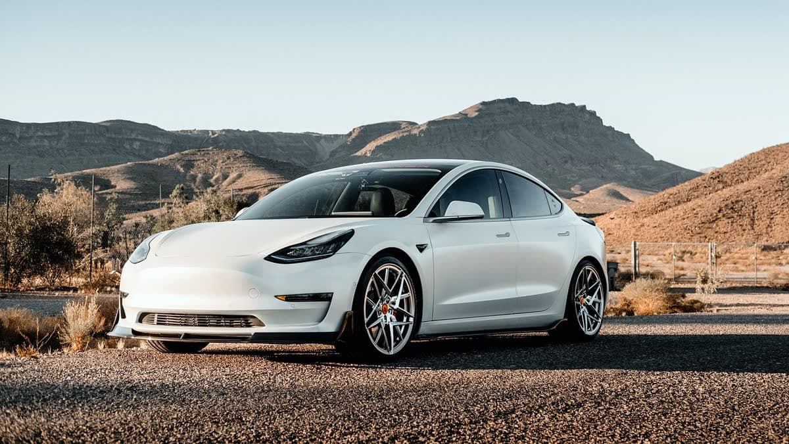
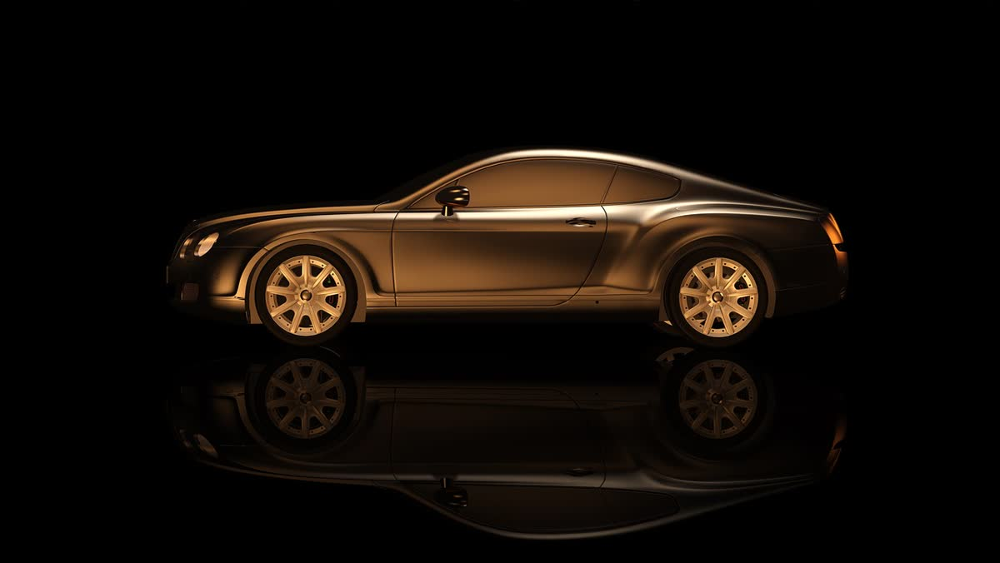

Midibüs, minibüs ve ticari araçta Antalya'nın güvenilir adresi.
Otokar, Isuzu, Mercedes Sprinter ve Ford Transit başta olmak üzere sıfır ve ikinci el ticari araçlar. Ekspertizli satış, takas, kredi desteği ve Türkiye'nin her yerine teslim.
★★★★★ 5 · 293 Google yorumu


